The Challenge
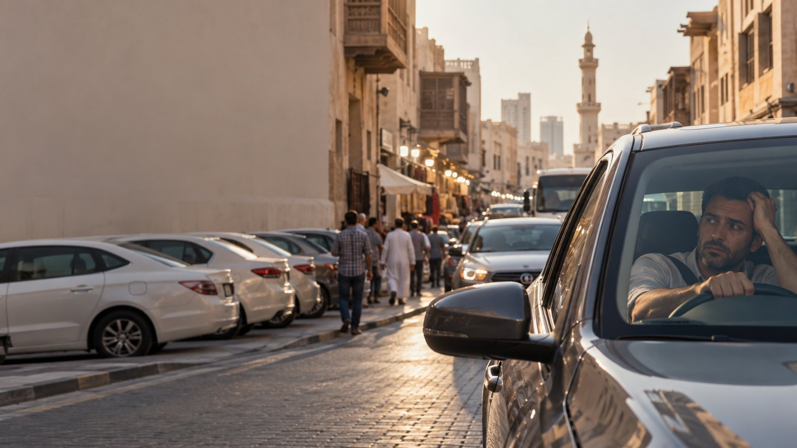
Everyone in Bur Dubai has a parking system.
The loop. The “two minutes.” Someone waiting in the car. Asking the shopkeeper for a favour.
These aren't parking solutions. They're workarounds.
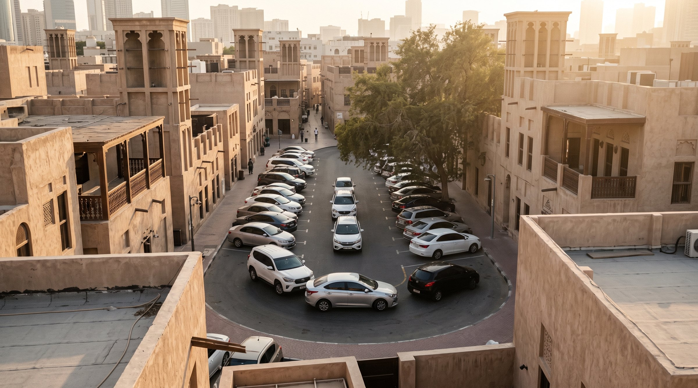
The challenge isn't awareness. It's behaviour.
People already know parking here is difficult. The job is to make WAB feel easier than the habits they already use.
We're not introducing a need. We're introducing a new behaviour.
Technology is how it works. Simplicity is why people will use it.
Automated parking is the proof. The benefit is much simpler:
We're not selling robotics. We're selling the feeling of done.
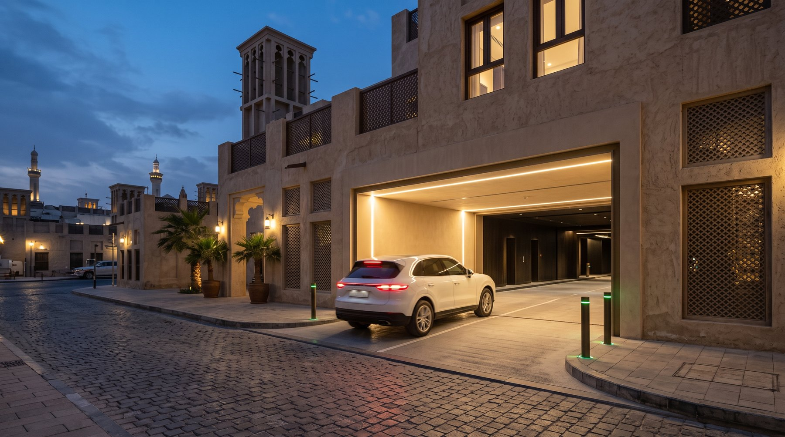
The car park can unlock the neighbourhood around it.
More parked cars means more people on foot, more time in the souq, more shopping and dining, and more footfall for the retail podium.
The Strategic Idea
Make the old behaviour visible. Make the new behaviour obvious.
The campaign contrasts what parking feels like today with what it can feel like with WAB. The old way looks messy. The new way looks direct.
BEFORE / NOW
One visual system, built on contrast.
Before
Searching. Waiting. Circling. Stress.
Now
Arrive. Park. Move on.
- The graphic device: a messy red route vs one clean green route.
- The human version: a person still parking vs a person already living their day.
- Everything signs off: As Simple as That.
The Campaign
Before, you went in circles. Now, you go straight in.
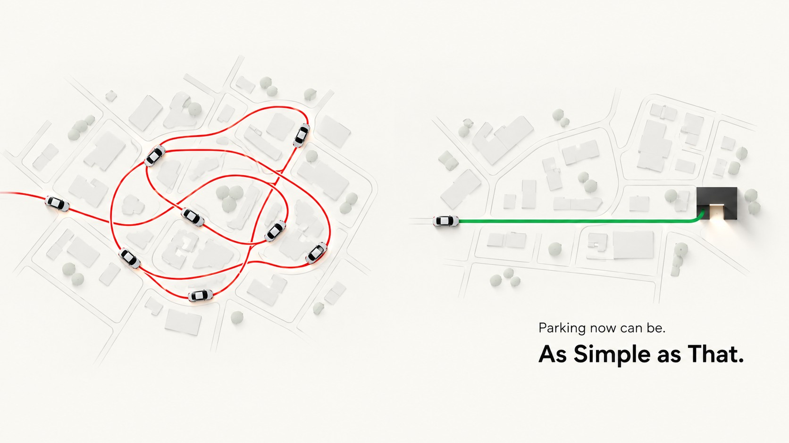
He's still parking. He's already shopping.
Parking now can be. As Simple as That.
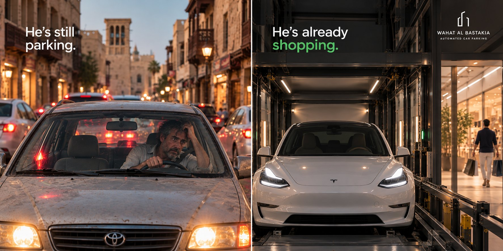
One of them is still parking.
The hero film shows BEFORE and NOW at the same time. One side stays stuck. The other moves on.
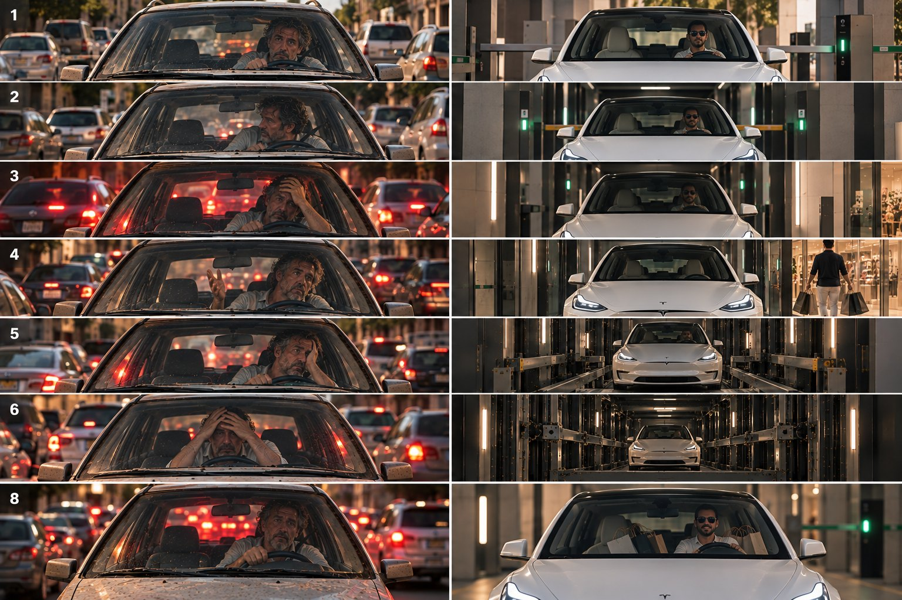
End super: “This film has been shortened for viewing purposes. The driver on the left continued looking for parking for another 45 minutes.”
Meanwhile…
- He's still parking. He's already having lunch.
- She's still parking. She's already shopping.
- He's still parking. He's already with his family.
- He's still parking. He's already in his meeting.
- She's still parking. She's already finished her errands.
A platform with longevity: in every episode, the WAB driver has already moved on.
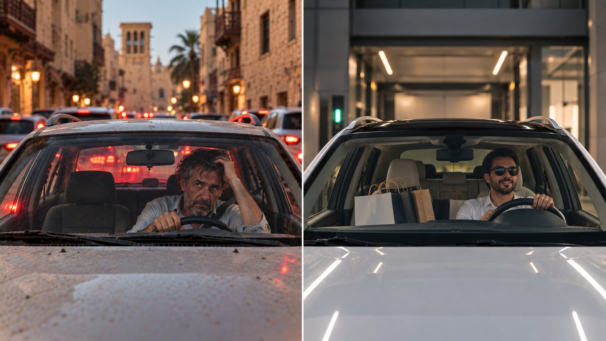
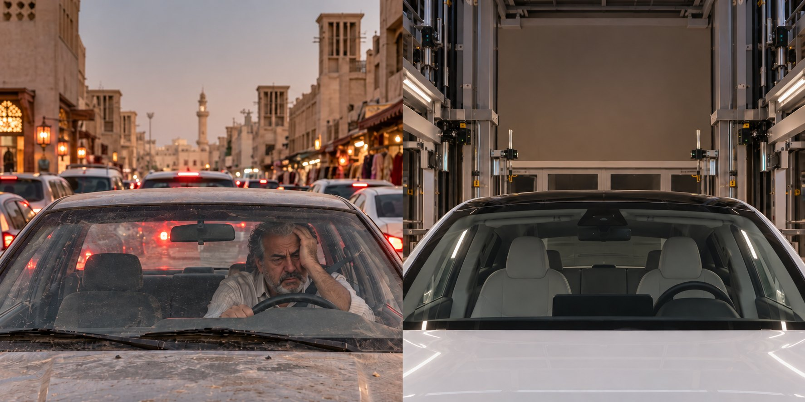
One idea. Everywhere.
Outdoor, the building hoarding, social, digital, Google Maps and the website.
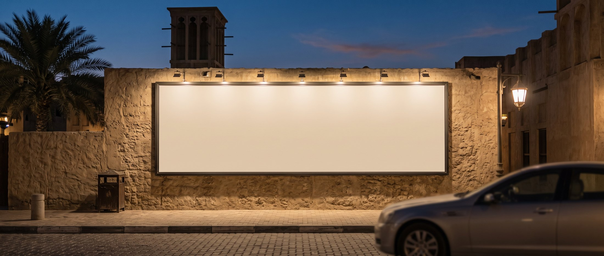
Social & Culture
The campaign becomes an always-on content ecosystem.
Four behaviours, each with one job.
What would you do with 30 free minutes?
Real people, cheeky questions, on the street.
- How long have you spent looking for parking here?
- What's the fastest way to park in Bur Dubai?
- Local trivia: the right answer wins free robot parking.
It gives the brand a personality, and tells us what people really think.
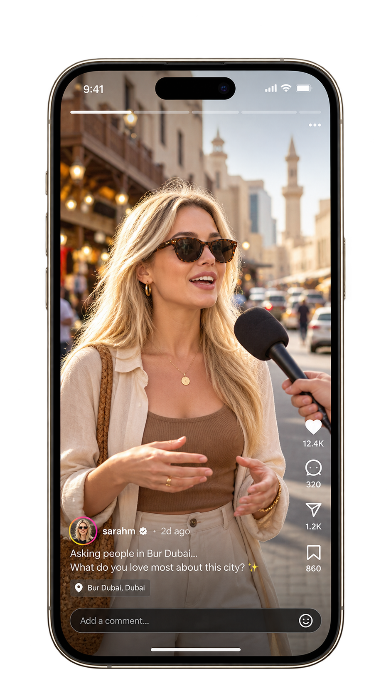
What happens after you leave your car.
The biggest barrier to first use is handing your car to a machine you can't see. Where does it go? Does anyone touch it? Will it come back the way I left it?
So we show it. Real dashcam footage follows the car through the whole journey: handover, lift, storage and retrieval. Nothing hidden.
Once people have seen what happens to their car, the fear goes. The machine is the proof, not the idea.
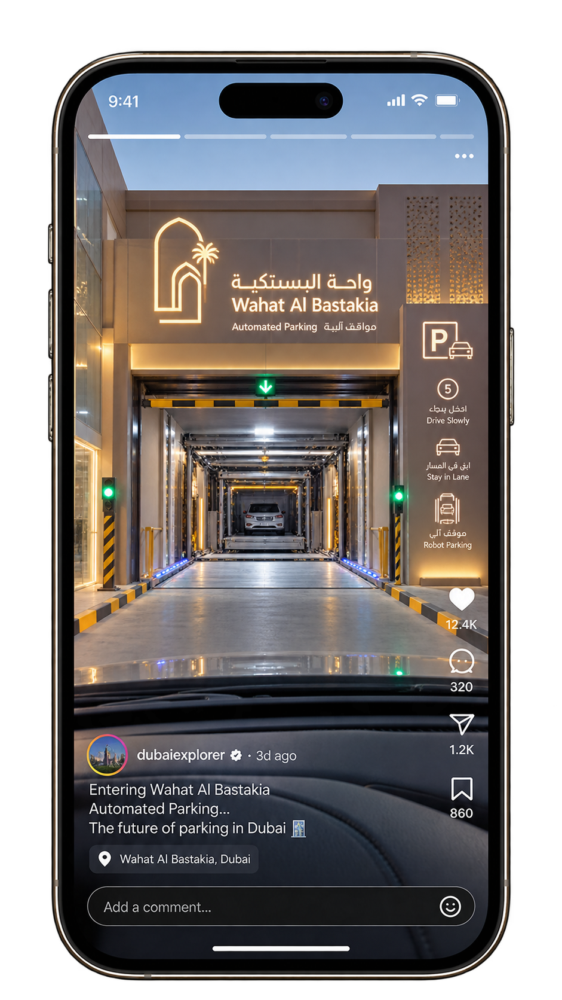
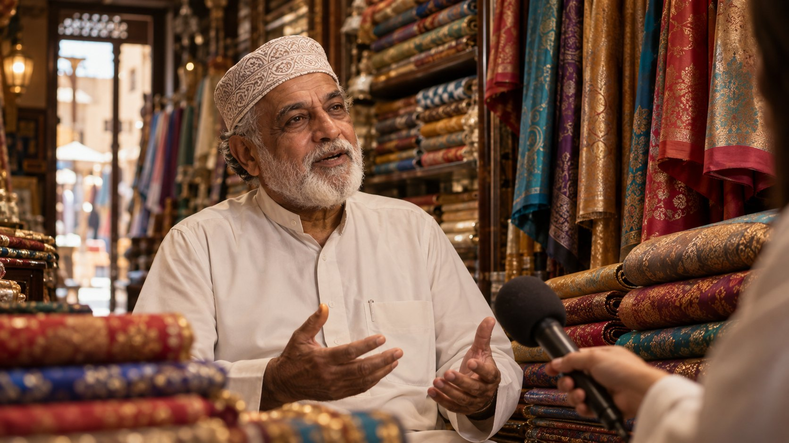
Before, the souq was simple. It can be again.
Long-time shopkeepers, traders, restaurant owners and families remember the neighbourhood before the cars took over: you pulled up, walked in, and knew everyone. Then the streets filled up and parking became a daily struggle.
Each episode puts then and now side by side, in archive photos and today's streets. WAB isn't changing the neighbourhood. It's bringing it back to its roots.
It also produces the documentary film required in the RFP.
The time you spent circling now belongs to the souq.
You park. You shop. You eat. You leave. As Simple as That.
Once parking is easy, the time people used to lose becomes time spent in WAB's retail area and the souq around it.
Shopping can be. Lunch can be. A quick errand can be. As Simple as That.
Making It Work
Tease. Launch. Always on.
Three months, one straight line.
Be there when the problem is happening.
The most important moment to win someone over is while they're already looking for parking.
- Hyperlocal: Google Maps, Search and Business Profile.
- City: social and video for awareness.
- Visitors: tourism and destination content.
Budget split and forecasts are in the appendix.
We count cars, not likes.
The campaign is measured against behaviour. Social metrics are supporting signals, not the objective.
Every number can be checked in WAB's own accounts. Retail and leasing enquiries are counted where they can be tracked.
One idea. One team.
Inhaus owns the ecosystem end to end, with a bilingual team that writes, shoots and runs everything in-house.
Parking now can be. As Simple as That.
Wahat Al Bastakia Automated Car Parking.
Appendix
RFP compliance
| RFP requirement | Where we answer it |
|---|---|
| 3.1 Strategy and messaging per audience | 01 Challenge · 02 Strategic Idea · Appendix C |
| 3.1 Creative concept: idea, key visual, tagline, look & feel | Intro · 02 Strategic Idea · 03 Campaign |
| 3.1 Phased roadmap with dates | 05 Making It Work (dates lock to opening day) |
| 3.1 Zone plan and budget split | 05 Making It Work · Appendix C |
| 3.1 Monthly content strategy and calendar | 04 Social & Culture · Appendix B |
| 3.1 Retail podium stream | 01 Challenge (two jobs) · 04 The time you get back |
| 3.2 Arabic and English, WAB brand identity | All content produced in AR/EN · Appendix C |
| 3.3 Shoots, stills, 12 short videos, 3D explainer, How-to | 03 Campaign · 04 POV / dashcam · Appendix B |
| Full documentary-style project video | 04 Neighbourhood documentary |
| 3.4 Social management, 5 platforms, 24h replies, FAQ bank | 04 Social & Culture · Appendix B |
| 3.5 Website, SEO, GA4/GTM, pixels, domain in WAB's name | Appendix E |
| 3.6 Paid media, Business Profile, retargeting, forecasts and benchmarks | 05 Be there when the problem is happening · Appendix C |
| 3.7 Creators, permits, press, tourism listings, government protocol, activation | Appendix D |
| 3.8 Reporting, weekly calls, named team, revisions, approvals | 05 We count cars · Appendix D, E |
| §8 WAB-owned accounts, UTMs, fraud indicators, KPI targets | 05 We count cars · Appendix D |
| §11 Company profile, references, showreel with 3D, team, creator shortlist | 05 One idea. One team. · Appendix D, E |
| §10 Commercial pricing schedule | Separate commercial proposal |
Deliverables and monthly volumes
| Ref | Deliverable | M1 | M2 | M3 |
|---|---|---|---|---|
| D1–D2 | Strategy, concept, roadmap, zones | 1 | – | – |
| D3 | Content calendar | 1 | 1 | 1 |
| D4–D5 | Shoot day · 30–40 final edited assets per shoot | 1 | 1 | 1 |
| D6 | Short-form videos (AR/EN subtitles) | 4 | 4 | 4 |
| D7–D8 | 3D explainer · How-to video | 1 + 1 | – | – |
| D9–D10 | Posts · stories | 14 · 12 | 14 · 12 | 14 · 12 |
| D11 | LinkedIn posts | 4 | 4 | 4 |
| D12 | Platforms managed | 5 | 5 | 5 |
| D13–D14 | Website · tracking · Business Profile | 1 | – | – |
| D15–D16 | Paid media · YouTube and retargeting | 1 | 2 | 2 |
| D17 | Creators | – | 2 | 2 |
| D18–D19 | Press release · launch activation (optional) | – | 1 | – |
| D20–D22 | Reports · weekly calls · KPIs | 1 · 4 · 1 | 1 · 4 | 1 · 4 |
| — | Documentary film | 1 |
Monthly content draws on the campaign series and the four social behaviours. Replies within 24 hours, with an FAQ bank supported by dashcam clips.
Platforms, messaging and media
| Platform | Role | Content |
|---|---|---|
| Google Maps, Search, Business Profile | Where people decide | Ads, listing, How-to |
| The campaign feed | Split-screen statics, series, documentary, the time you get back | |
| TikTok | Street level | Street conversations, dashcam |
| YouTube | The longer story | Hero film, explainer, documentary, Shorts |
| Residents and traders | Documentary, community updates | |
| Leasing | Retail podium leasing, tenants, milestones |
| Audience | English | العربية |
|---|---|---|
| Daily drivers, traders | Parking now can be. As Simple as That. | مواقف السيارات أصبحت أسهل. بكل بساطة. |
| Shoppers, families, visitors | Shopping can be. As Simple as That. | التسوّق أصبح أسهل. بكل بساطة. |
| Tenants | Your customers arrive already parked. | عملاؤك يصلون وقد تمّ تأمين مواقفهم مسبقاً. |
| Leasing prospects | A retail unit with the parking already solved. | مساحة تجارية مع حلّ مواقف جاهز من البداية. |
| Zone | Channels | Indicative CPC benchmark | Proposed split |
|---|---|---|---|
| Hyperlocal | Google Maps, Search, Business Profile, on-site | Google Search & local intent: AED 3–8 | 45% |
| City | Social and video; LinkedIn for leasing | Meta social & video: AED 1–3 LinkedIn leasing: AED 12–25 | 40% |
| Visitors | Video, social, tourism partners | Meta & social video: AED 1–3 | 15% |
Retargeting from Month 2. Indicative UAE benchmarks: Meta CPC AED 1–3; Google Search CPC AED 3–8 for retail and local-intent queries; LinkedIn leasing campaigns benchmarked separately due to higher B2B click costs. Final reach, impressions, clicks, CPM and CPC forecasts to be validated against live campaign performance.
KPIs, creators, PR and governance
| KPIs · Month 1 | Website, tracking and Business Profile live; explainer and teaser views; Maps views |
| KPIs · Month 2 | Direction requests, “Get directions” clicks, cars parked |
| KPIs · Month 3 | Growth in cars parked, repeat visits, retail and leasing enquiries. Numeric targets TBC |
| Governance | WAB-owned accounts with Inhaus as manager; UTMs on every ad; no paid followers; follower growth always reported next to engagement |
| Creators | Four creators (food, car/tech, heritage, family), all with UAE advertiser permits and disclosure. Shortlist TBC |
| PR | Launch press release, media list and tourism listings; optional launch-day activation |
| Government protocol | No RTA, Dubai Municipality or Dubai Culture name, logo or quote without prior written approval |
| Reporting | Monthly performance report, weekly status call, two revision rounds, nothing published without WAB's written approval |
Team, website and handover
| Named team | Account manager, strategist, designer, videographer, media buyer; bilingual Arabic/English. Bios TBC |
| Credentials | Campaigns, success cases and showreel at deck.inhaus.ae. Company profile, three client references and 3D/animation samples TBC |
| Website | Bilingual, up to six pages, mobile PageSpeed 80+, on-page SEO, local parking schema, sitemap, Search Console; live before launch |
| Tracking | GA4, Google Tag Manager, Meta and TikTok pixels, all on WAB-owned properties |
| Ownership | Domain, hosting and SSL in WAB's name; full credentials and files handed over |
| Licensing | Music, stock and talent licensed for paid use in the UAE for at least 12 months; raw footage and source files handed over |
| Commercial | Pricing in the separate commercial proposal |